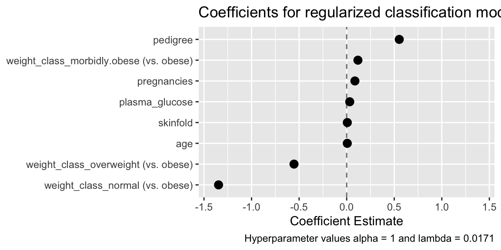

Interpret a model via regularized coefficient estimates
interpret(x, sparsity = NULL, remove_zeros = TRUE, top_n)
| x | a model_list object containing a glmnet model |
|---|---|
| sparsity | If NULL (default) coefficients for the best-performing model will be returned. Otherwise, a value in [0, 1] that determines the sparseness of the model for which coefficients will be returned, with 0 being maximally sparse (i.e. having the fewest non-zero coefficients) and 1 being minimally sparse |
| remove_zeros | Remove features with coefficients equal to 0? Default is TRUE |
| top_n | Integer: How many coefficients to return? The largest top_n absolute-value coefficients will be returned. If missing (default), all coefficients are returned |
A data frame of variables and their regularized regression coefficient estimates with parent class "interpret"
**WARNING** Coefficients are on the scale of the predictors; they
are not standardized, so unless features were scaled before training (e.g.
with prep_data(..., scale = TRUE), the magnitude of coefficients
does not necessarily reflect their importance.
If x was trained with more than one value of alpha the best value of alpha is used; sparsity is determined only via the selection of lambda. Using only lasso regression (i.e. alpha = 1) will produce a sparser set of coefficients and can be obtained by not tuning hyperparameters.
#>#>#> #>#> #> #>#>#> #> #>interpret(m)#> Reference Levels: #> All `weight_class` estimates are relative to `obese` #> #> # A tibble: 9 x 2 #> variable coefficient #> * <chr> <dbl> #> 1 (Intercept) -5.44 #> 2 weight_class_normal (vs. obese) -1.35 #> 3 weight_class_overweight (vs. obese) -0.554 #> 4 pedigree 0.553 #> 5 weight_class_morbidly.obese (vs. obese) 0.118 #> 6 pregnancies 0.0866 #> 7 plasma_glucose 0.0322 #> 8 skinfold 0.00660 #> 9 age 0.00643interpret(m, .2)#> Reference Levels: #> All `weight_class` estimates are relative to `obese` #> #> # A tibble: 4 x 2 #> variable coefficient #> * <chr> <dbl> #> 1 (Intercept) -3.75 #> 2 weight_class_normal (vs. obese) -0.208 #> 3 plasma_glucose 0.0247 #> 4 pregnancies 0.0197